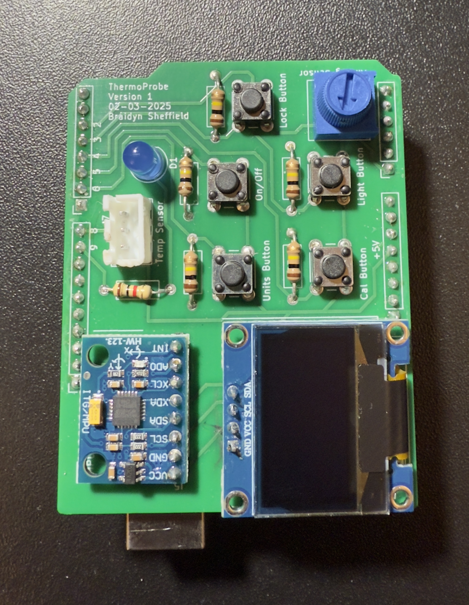
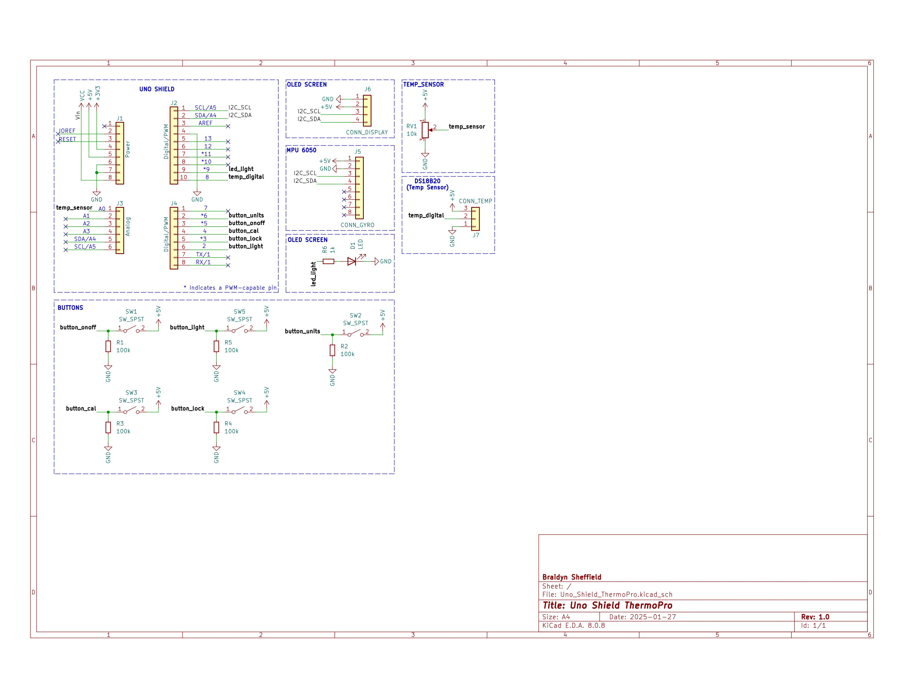
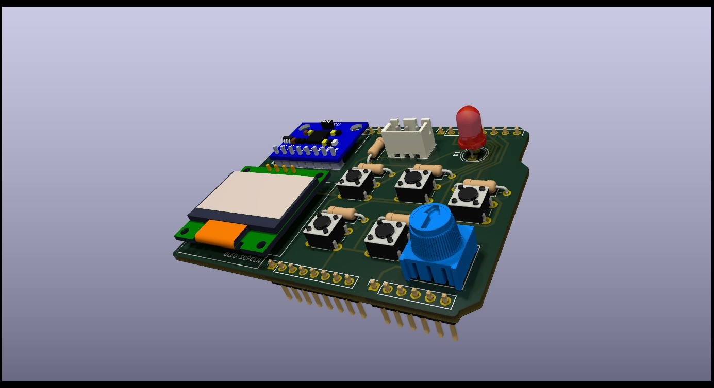

Digital Thermometer
Arduino Uno shield (bridge PCB) with OLED display, MPU6050 auto-rotation, external JST-connected thermometer, and a five-button interface for units, calibration (simulated), backlight (LED simulation), screen power, and temperature lock.

This Digital Thermometer is built as an Arduino Uno shield (bridge PCB) that plugs directly into an Uno. It reads temperature from an external sensor connected via a JST header and displays the value on a 0.96″ I²C OLED. The UI is driven by five tactile buttons:
- Units: toggle °C/°F
- Calibrate: simulated calibration flow (UI only)
- Backlight: simulated backlight using an onboard LED
- Screen Power: turn the OLED on/off
- Lock: freeze the current reading and show a lock icon
Orientation-aware display is handled with an onboard MPU6050—the thermometer rotates the UI based on how you hold the unit. Firmware is written in Arduino (C++) using a clean state machine to manage UI states, button events, sensor reads, and display updates.
- Live Temperature Display: continuous read & update on OLED
- °C/°F Units Toggle: button quickly switches display units
- Lock Reading: freezes current value; lock icon renders on OLED
- Auto-Rotate UI: MPU6050 controls screen orientation
- Simulated Backlight: onboard LED mirrors backlight behavior
- Simulated Calibration: UI routine to illustrate calibration flow
- Screen Power Control: button to sleep/wake the display
- Debounced Input: firmware state machine handles button debouncing & events
Designed in KiCad as an Arduino Uno shield (bridge PCB) with:
- 0.96″ I²C OLED header
- MPU6050 (I²C) for orientation
- External thermometer via JST
- Five tactile buttons with silkscreen labels
- Onboard LED as backlight simulation

Click to view full-resolution schematic

Click to view full-resolution PCB layout

Arduino (C++) firmware organized as a state machine:
- Reads external thermometer and converts to °C/°F
- Debounces five UI buttons and handles events
- Controls OLED: live display, lock icon, screen on/off
- Uses MPU6050 to rotate the UI based on device orientation
- Simulated calibration and backlight behaviors
View the full code on GitHub:
View Code on GitHub- Platform: Arduino Uno (shield / bridge PCB)
- Display: 0.96″ I²C OLED
- Orientation: MPU6050 (I²C)
- Thermometer: External sensor via JST connector
- UI: Five tactile buttons (units, calibrate, backlight LED, screen power, lock)
- Firmware: Arduino (C++) state machine
- PCB Design: KiCad